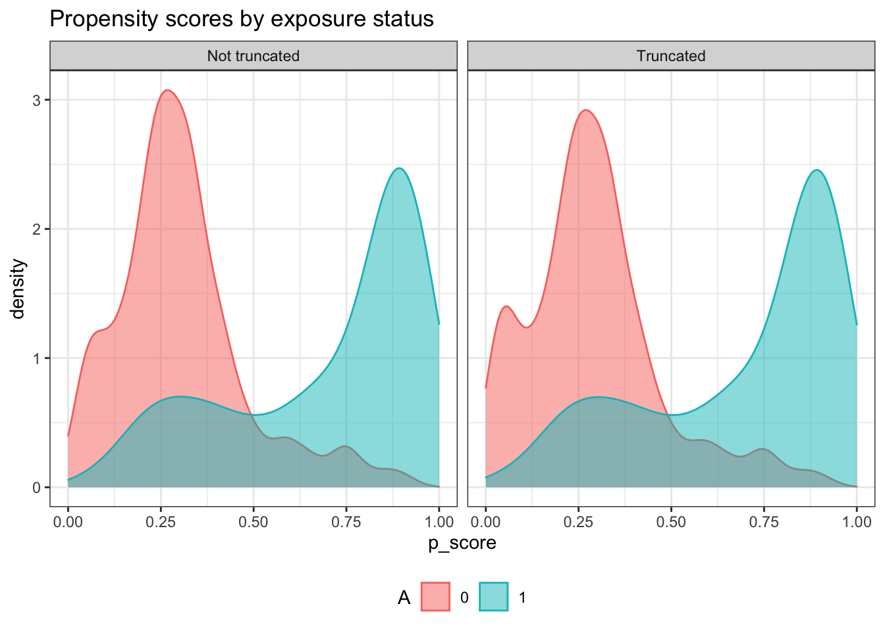

Chapter 4 平均差の推定
4.1 概念整理
条件付き平均差 \(\tau(x)=E[Y_i|D_i=d,X_i=x] - E[Y_i|D_i=d',X_i=x]\) の特徴を推定
- ここでは \(\tau = \tau(x)\) の平均値を推定
大きく２種類の推定方法を紹介
4.1.1 Robinson推定
- 部分線形モデル (Robinson 1988) 上で \(\tau\)
\[E[Y|D=d,X=x]=\underbrace{\tau}_{Interest\ parameter}\times d+\underbrace{f(x)}_{Nuisance\ function}\]
線形モデルの一般化として解釈できる: \(f(X)=\beta_0 + \beta_1X_1+...+\beta_LX_L\) と定式化すれば線形モデルと一致
推定手順:
- 部分線形モデルを変換
\[Y_i-\underbrace{E[Y_i|X_i]}_{Nuisance\ term}=\tau\times [D_i-\underbrace{E[D_i|X_i]}_{Nuisance\ term}]+u_i\]
\(E[Y_i|X_i],E[D_i|X_i]\)を予測関数として推定
予測誤差間を単回帰
- 実際には\(E[Y_i|X_i],E[D_i|X_i]\)は未知の関数なので何らかの方法で推定する必要がある。関数の推定なので予測の手法が適用できる。
4.1.2 Argument Inverse Propensity Score
2値の原因変数 \(D_i=\{0,1\}\) を想定
Double robust score \(\phi\) を用いて推定
\[\phi_i(\tilde \mu_{1i},\tilde \mu_{0i},\tilde \mu_{Di})=\tilde \mu_{1i} - \tilde \mu_{0i} + \frac{D_i\times (Y_i-\tilde \mu_{1i})}{\tilde \mu_{Di}} + \frac{(1-D_i)\times (Y_i-\tilde \mu_{0i})}{1-\tilde \mu_{Di}}\]
- 以下が成立
\[\tau\equiv E[\tau(x)]=E[\phi_i(\mu_{1i},\mu_{0i},\mu_{Di})]\]
ただし \(\mu_{1i}=E[Y_i|D_i=1,X_i]\) , \(\mu_{0i}=E[Y_i|D_i=0,X_i]\) , \(\mu_{Di}=E[D_i|X_i]\)
推定手順
\(\mu_{1i},\mu_{0i},\mu_{Di}\) を予測関数として推定
推定値 \(\tilde \mu_{1i},\tilde \mu_{0i},\tilde \mu_{Di}\) を用いて、 \(\phi_i(\tilde \mu_{1i},\tilde \mu_{0i},\tilde \mu_{Di})\) を計算
\(\sum_i \phi_i(\tilde \mu_{1i},\tilde \mu_{0i},\tilde \mu_{Di})/N\) として \(\tau\) を推定
4.2 パッケージ
library(tidyverse)
library(AER)
library(DoubleML)
library(mlr3)
library(mlr3learners)
library(data.table)
library(SuperLearner)
library(AIPW)
library(SuperLearner)
library(future.apply)
library(recipes)
library(estimatr)4.3 データ
data("PSID1982")
set.seed(123)
Y <- PSID1982$wage |> log() # 結果変数
D <- if_else(PSID1982$occupation == "white",1,0)
X <- recipe(~ education + south + smsa + gender + ethnicity + industry + weeks,
PSID1982) |>
step_other(all_nominal_predictors(),
other = "others") |>
step_unknown(all_nominal_predictors()) |>
step_indicate_na(all_numeric_predictors()) |>
step_impute_median(all_numeric_predictors()) |>
step_dummy(all_nominal_predictors()) |>
step_zv(all_numeric_predictors()) |>
prep() |>
bake(PSID1982)4.4 Robinsons推定 (SuperLearner)
部分線形モデルをDouble Machine Learning法 (Chernozhukov et al. 2018) で推定
なんらかの方法（例、OLS、ランダムフォレスト、LASSO）で\(E[Y|X],E[D|X]\)の予測関数\(f_Y(X),f_D(X)\)を推定し、予測誤差を単回帰
SuperLearner pakageを用いて推定
fit.Y <- CV.SuperLearner(X = X,
Y = Y,
SL.library = c("SL.glmnet",
"SL.lm",
"SL.ranger")
)
fit.D <- CV.SuperLearner(X = X,
Y = D,
SL.library = c("SL.glmnet",
"SL.lm",
"SL.ranger")
)
Y.oht <- Y - fit.Y$SL.predict
D.oht <- D - fit.D$SL.predict
lm_robust(Y.oht ~ 0 + D.oht)## Estimate Std. Error t value Pr(>|t|) CI Lower CI Upper DF
## D.oht 0.1195776 0.03674064 3.254641 0.001199883 0.04742023 0.1917349 5944.5 Robinson推定 (DoubleML)
DoubleMLパッケージ(Bach et al. 2021)を利用
- 機械学習についてのメタパッケージである、mlr3がベース
learner <-
lrn("regr.ranger",
num.trees = 100) # Require bigger num.trees in practice
ml_g <- learner$clone()
ml_m <- learner$clone()
obj_dml_data <-
double_ml_data_from_matrix(X = X,
y = as.numeric(Y),
d = as.numeric(D))
dml_plr_obj <-
DoubleMLPLR$new(obj_dml_data,
ml_g,
ml_m,
dml_procedure="dml1",
n_rep = 3)
dml_plr_obj$fit()## INFO [16:39:36.810] [mlr3] Applying learner 'regr.ranger' on task 'nuis_g' (iter 3/5)
## INFO [16:39:36.836] [mlr3] Applying learner 'regr.ranger' on task 'nuis_g' (iter 5/5)
## INFO [16:39:36.852] [mlr3] Applying learner 'regr.ranger' on task 'nuis_g' (iter 2/5)
## INFO [16:39:36.865] [mlr3] Applying learner 'regr.ranger' on task 'nuis_g' (iter 1/5)
## INFO [16:39:36.879] [mlr3] Applying learner 'regr.ranger' on task 'nuis_g' (iter 4/5)
## INFO [16:39:36.921] [mlr3] Applying learner 'regr.ranger' on task 'nuis_m' (iter 1/5)
## INFO [16:39:36.934] [mlr3] Applying learner 'regr.ranger' on task 'nuis_m' (iter 2/5)
## INFO [16:39:36.947] [mlr3] Applying learner 'regr.ranger' on task 'nuis_m' (iter 4/5)
## INFO [16:39:36.959] [mlr3] Applying learner 'regr.ranger' on task 'nuis_m' (iter 5/5)
## INFO [16:39:36.971] [mlr3] Applying learner 'regr.ranger' on task 'nuis_m' (iter 3/5)
## INFO [16:39:37.014] [mlr3] Applying learner 'regr.ranger' on task 'nuis_g' (iter 2/5)
## INFO [16:39:37.027] [mlr3] Applying learner 'regr.ranger' on task 'nuis_g' (iter 5/5)
## INFO [16:39:37.041] [mlr3] Applying learner 'regr.ranger' on task 'nuis_g' (iter 3/5)
## INFO [16:39:37.054] [mlr3] Applying learner 'regr.ranger' on task 'nuis_g' (iter 4/5)
## INFO [16:39:37.067] [mlr3] Applying learner 'regr.ranger' on task 'nuis_g' (iter 1/5)
## INFO [16:39:37.101] [mlr3] Applying learner 'regr.ranger' on task 'nuis_m' (iter 3/5)
## INFO [16:39:37.114] [mlr3] Applying learner 'regr.ranger' on task 'nuis_m' (iter 4/5)
## INFO [16:39:37.127] [mlr3] Applying learner 'regr.ranger' on task 'nuis_m' (iter 1/5)
## INFO [16:39:37.139] [mlr3] Applying learner 'regr.ranger' on task 'nuis_m' (iter 5/5)
## INFO [16:39:37.151] [mlr3] Applying learner 'regr.ranger' on task 'nuis_m' (iter 2/5)
## INFO [16:39:37.193] [mlr3] Applying learner 'regr.ranger' on task 'nuis_g' (iter 5/5)
## INFO [16:39:37.208] [mlr3] Applying learner 'regr.ranger' on task 'nuis_g' (iter 3/5)
## INFO [16:39:37.223] [mlr3] Applying learner 'regr.ranger' on task 'nuis_g' (iter 2/5)
## INFO [16:39:37.238] [mlr3] Applying learner 'regr.ranger' on task 'nuis_g' (iter 4/5)
## INFO [16:39:37.253] [mlr3] Applying learner 'regr.ranger' on task 'nuis_g' (iter 1/5)
## INFO [16:39:37.297] [mlr3] Applying learner 'regr.ranger' on task 'nuis_m' (iter 4/5)
## INFO [16:39:37.311] [mlr3] Applying learner 'regr.ranger' on task 'nuis_m' (iter 5/5)
## INFO [16:39:37.325] [mlr3] Applying learner 'regr.ranger' on task 'nuis_m' (iter 1/5)
## INFO [16:39:37.339] [mlr3] Applying learner 'regr.ranger' on task 'nuis_m' (iter 2/5)
## INFO [16:39:37.352] [mlr3] Applying learner 'regr.ranger' on task 'nuis_m' (iter 3/5)print(dml_plr_obj)## ================= DoubleMLPLR Object ==================
##
##
## ------------------ Data summary ------------------
## Outcome variable: y
## Treatment variable(s): d
## Covariates: X1, X2, X3, X4, X5, X6, X7
## Instrument(s):
## No. Observations: 595
##
## ------------------ Score & algorithm ------------------
## Score function: partialling out
## DML algorithm: dml1
##
## ------------------ Machine learner ------------------
## ml_g: regr.ranger
## ml_m: regr.ranger
##
## ------------------ Resampling ------------------
## No. folds: 5
## No. repeated sample splits: 3
## Apply cross-fitting: TRUE
##
## ------------------ Fit summary ------------------
## Estimates and significance testing of the effect of target variables
## Estimate. Std. Error t value Pr(>|t|)
## d 0.13122 0.03619 3.625 0.000289 ***
## ---
## Signif. codes: 0 '***' 0.001 '**' 0.01 '*' 0.05 '.' 0.1 ' ' 14.6 AIPW (AIPW)
AIPWパッケージを用いて、AIPW推定
- SuperLearnerパッケージがベース
plan(multisession, workers = 8, gc = T)
algorism <- AIPW$new(
Y = Y,
A = D,
W = X,
Q.SL.library = c(
"SL.lm",
"SL.ranger",
"SL.glmnet"
),
g.SL.library = c(
"SL.lm",
"SL.ranger",
"SL.glmnet"
)
)
algorism$stratified_fit()$summary()## Estimate SE 95% LCL 95% UCL N
## Risk of exposure 6.9744 0.0502 6.8760 7.073 290
## Risk of control 6.8572 0.0189 6.8202 6.894 305
## Risk Difference 0.1171 0.0515 0.0162 0.218 595
## ATT Risk Difference 0.1926 0.0280 0.1377 0.248 595
## ATC Risk Difference 0.0402 0.0943 -0.1447 0.225 5954.6.1 Balance check
0あるいは1に非常に近い \(\tilde\mu_{Di}\) が存在する場合、AIPW推定は極めて不安定
- Default設定では, \(\tilde \mu_{Di} \le 0.025\) または \(\tilde \mu_{Di} \ge 0.975\) であればサンプル \(i\) は推定から排除される
平均差の推定の前に、 \(\tilde\mu_{Di}\) の分布を確認する必要がある
\(\tilde\mu_{Di}\) の分布
algorism$plot.p_score()